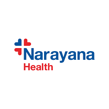
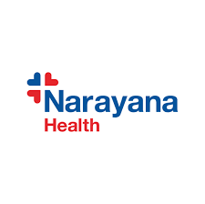

Healthcare for Everyone, Everywhere.
We are a non-profit organisation on a mission to provide healthcare and awareness to the underprivileged, impacting over 1000+ lives annually.

We are a non-profit organisation on a mission to provide healthcare and awareness to the underprivileged, impacting over 1000+ lives annually.
Funds Raised
Medical Camps
Lives Impacted

CareForAll (CFA) was birthed with the mission of providing healthcare and awareness to the underprivileged. Along our journey, we realised our potential to help even more people and spread our roots into new communities.
We hold medical camps and awareness sessions to educate children on hygiene and register adults for government schemes. We believe in holistic care—restoring health through camps and maintaining it through awareness.
100% Non-Profit: We fund everything ourselves—medicines, follow-ups, food—leaving NGOs and schools with zero expense.
Key milestones in our mission to serve.
Partnered with Building Blocks India foundation for 100 children. General check-ups and deworming.
Educated children at Diya Ghar foundation on hand washing techniques and hygiene.
Served over 300 children at Ramagondanahalli Government school.
Official publicity in the Bangalore Mirror - Times of India newspaper.
Reached our major milestone of impacting over 1000 lives through our camps.
Collaborating with leading organizations to maximize impact.


 


The passionate individuals driving our mission forward.

Founder
Arnav Raj Aggarwal is the Founder of CareForAll, driven by a vision to bridge the healthcare gap for underprivileged communities. With a commitment to social impact, he leads the organization in conducting medical camps, hygiene awareness sessions, and educational initiatives that have touched over 1000 lives. Arnav's leadership has fostered key partnerships and brought attention to critical health issues, as he strives to build a healthier, more equitable future for all.

Team Member
Inspired by biological sciences and a passion for social work, Pranoy Mathur hopes to create a lasting impact in his community through his work with CareForAll

Technology Team
Arnav Ravinder is a passionate technologist dedicated to making education and opportunities accessible to everyone. With expertise in full-stack development and a drive to use tech for social good, Arnav leads the technology efforts at CareForAll, ensuring our digital presence drives real-world impact.

Medical Camp Manager
Vittal is a student, aspiring to work in translational medicine and biochemistry, bridging scientific research with real-world healthcare solutions. He hopes to give back to the community and help scale up CareForAll's operation to new heights.

Head of Public Relations
Siddharth Venkatesh is a skilled orator, athlete and researcher. He has an array of skills which he uses to fulfill his role as Head of Public Relations.

Co-CFO
Yavisht (Yavi) has a deep interest in economics and political science. He is sixteen years old and is currently studying at Inventure Academy. He is the Co-CFO of CareForAll. Through this initiative he wishes to make a real impact on the underprivileged community that he wishes to give back to.

Finance & Fundraising Team
With a deep interest in the life sciences and a commitment to creating meaningful social impact, Dia hopes to give back to the community through her work at CareForAll. She contributes to the organization’s financial planning, budgeting, and fundraising efforts that sustain its outreach initiatives. Guided by compassion and the desire to make a difference in people’s lives, Dia strives to help CareForAll make quality medical care more accessible to underprivileged children.

Head of Content Creation & Digital Design
Vanya is the head of our content creation and digital design department. She is passionate about biology, chemistry and the medical sciences not only in textbooks, but in terms of translating the sciences to serve people. She loves engaging in dialogue and public service and action ,therefore wanting to broaden healthcare access and community change through CareForAll’s page, in an effort to merge compassion and a keenness in medicine to make a difference.

Head of Content Creation & Digital Design
Tara is the head of our content creation and digital design department. She has a passion for Biology, Chemistry, and hopes to work in biotechnology to bring several advancements to the healthcare world. She hopes to help grow CareForAll to a larger scale, and improve the lives of many.

Finance Team
Vivaan is part of the finance team at Care for All, where he channels his passion for money and finance into meaningful impact. Fascinated by how finance can drive growth and opportunity, he hopes to build a career in finance and business that makes a real difference. At Care for All, Vivaan hopes to see the organization scale and impact as many lives as possible, reaching more communities and creating lasting change. Outside of this, he’s passionate about sports and debate, which fuel his competitive spirit, focus, and ability to think on his feet.

Digital Designer
Meher is a digital designer who combines her passion for creativity and service. Driven by a deep interest in biology and chemistry, and how they can enhance everyday life, she aims to expand CareForAll’s reach to as many students as possible. Guided by her commitment to service, she believes that thoughtful design can create awareness, inspire empathy, and make healthcare more accessible to the underprivileged.

Content Creation Team
Aditi is a member of CareForAll’s Content Creation team, and loves both studying and applying the concepts of Economics, Computer Science and Psychology to her everyday life. She enjoys observing the world around her as well as researching interesting subjects and expressing her ideas through writing. With a passion for creating content with intent, she aims to share CareForAll’s mission and purpose, and help expand their reach through social media to support its goal of providing healthcare and awareness to the underprivileged.

Content Creation Team
Alpana is part of the content creation team where she utilizes her fondness for creative and writing skills. Her goal is to implement writing and creativity in the real world through Care For All, where she will harness her skills to help underprivileged and less fortunate children. Driven by s belief that writing and creativity holds power, she hopes to use these skills to largen the scale of Care For All’s reach to help as many children as possible

Writer & Content Creator
Twisha is a writer and content creator drawn to the quiet wonders of the human mind and body. She finds beauty in biology, meaning in psychology, and endless curiosity in philosophy. Through CareForAll, she hopes to weave science and story together — turning information into understanding, and empathy into action.
CEO and Head of Operations
Pranoy Mathur is a student at the Bangalore International School, and leads the team as CEO and Head of Operations, where he oversees the strategic direction and day-to-day functioning of the organization. With a strong commitment to growing operations and optimizing impact, Pranoy ensures that every initiative is executed efficiently to reach those in need.

Social Media Team
Aaishwaryaa is part of the social media team with a passion for creating meaningful impact in society. She aims to use her content creation skills and creative ideas to help underprivileged children by spreading awareness and driving action through digital platforms. With a strong interest in dance along with a passion for video editing, graphic design, and content creation, she enjoys using creativity as a bridge to connect with people and spark change. Through Care For All, She hopes to further achieve this mission, inspire empathy, awareness, and social responsibility.